互惠动态
|
|
20年后你的孩子会成为什么样的？看完这个漫画你就知道了。
“别让孩子输在起跑线上”是曾经风靡，现在仍然非常具有鼓动性的话语，很多父母允许自己平凡、平庸，却无法忍受自己的孩子是个普通人,为了让孩子站上“塔顶塔尖”，甘愿付出全部的时间、精力、心思、金钱实现着一个个拔苗助长的理论。
“别让孩子输在起跑线上”，这句话本身没有问题，问题是我们弄错了“起跑线”。事实上父母才是孩子的起跑线，这个起跑线甚至从孩子还为出生的那一刻就开始发挥作用，它的影响潜移默化，却深刻地左右了孩子的人生。在知乎上曾有这样一组漫画：
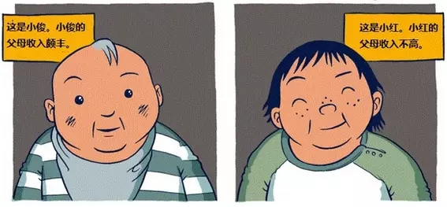
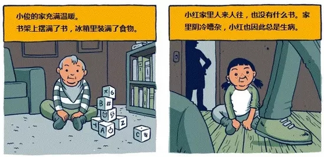
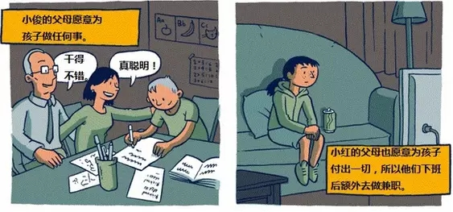
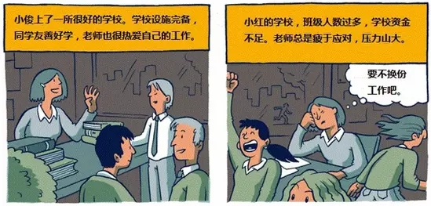
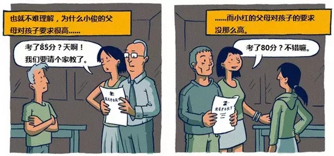
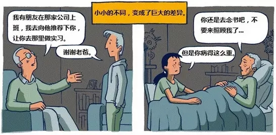
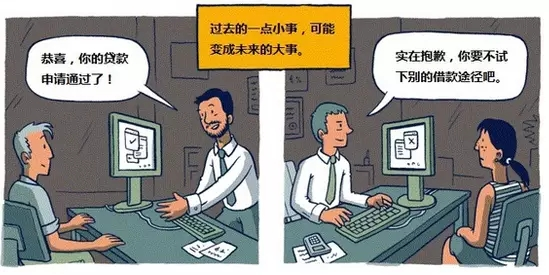
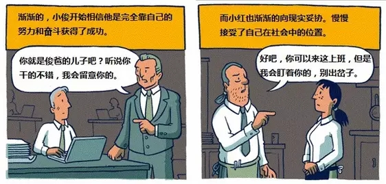
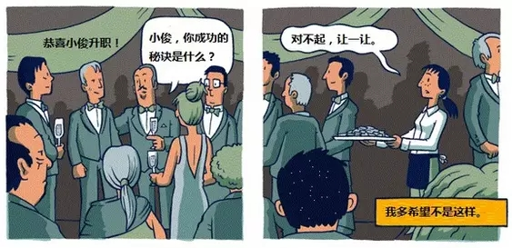
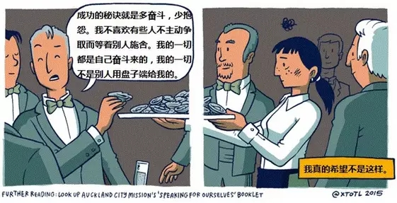
其实不管你愿不愿意，绝大多数人的人生就是沿着这样的轨迹发展，下次当你仰望着成功人士那熠熠生辉的眼神，苦苦追问成功秘诀时，别再天真地以为成功就是“努力、努力、更努力”。也许你认为这幅漫画反应的现实并不完全绝对，不是还有一部分人可以通过自己的努力成功跳出既定轨道吗？但那毕竟是少数。
我们暂且不考虑究竟有多少人能跳出社会等级的既定魔咒成功逆袭，不可否认的是这组漫画从另一个侧面告诉我们一些有趣的规律性的东西。
家庭里一点一滴小事，
积淀成了孩子人生的大事
我们常常强调父母的言传身教对孩子影响巨大，而高质量的“言传”和满富正能量的“身教”来自于哪里？家庭环境、父母的知识素养、教育观念、为孩子提供的教育环境、父母期望、父母对孩子的评价、亲子沟通方式、父母的社会资源等等。这些东西统统都会在孩子身上发生潜移默化的深刻影响，所以说父母是孩子的起跑是在再恰当不过的了！
比如：父母的智商和情商，决定了孩子的起点，这是基因的遗传，基本很难改变。
父母的经济能力和人脉，决定了孩子的弹跳高度，别用勤能补拙来自我安慰，在智商相差无、几所有孩子的聪明伶俐的状态下，父母的资源可以助力孩子更好地飞翔。
父母对养育孩子的认知，决定孩子什么时候发力，人生虽然是长跑，但有人早跑了，也许他会乏力，会累，但谁也不能保证你的孩子在后半程就可以爆发。
父母的眼光和毅力，会发掘孩子的天赋和特长，未被埋没的优异禀赋和特长绝对会为孩子的人生加分不少。这就是所谓人无我有，人有我优。
父母的脾气和性格也会对孩子产生巨大影响，你太强势孩子会唯唯诺诺，你太焦虑孩子会有压力，你管太多孩子会叛逆……
总之，在这个阶层固化的环境下，教育从来就不是“小孩自己努力”就可以达到的事情，你看得见或者看不见的地方，都是贫富的比拼。你觉得富人的教育是靠真金白银上点补习班，出几趟国出来旅游就可以的?错!优质人脉、思维方式、教育理念和陪伴时间都远比人民币更深刻地影响着你的孩子，并悄悄地完成财富的代际传递!
能给孩子人生理想提供多大支撑
决定了孩子的人生方向
如果家庭能给孩子的人生理想提供足够的支撑，那么孩子将会少走很多弯路。理想被现实压弯的那些娃，多是来自经济困难的家庭，有调查显示父母的收入水平与孩子所就读的专业有关联。即高收入家庭的孩子更倾向选择历史、文学、表演等文科专业，而低收入家庭的孩子出于就业回报等考虑，则更多选择实用性更强的计算机、物理等理工科专业。这种趋势在国内似乎越来越明显，而在国外则更是如此。
在经济拮据、生活窘迫的情况下，人肯定最先想到的是如何才能多赚钱，生活被迫苟且，哪里还顾得上诗和远方。而那些富人家的孩子，从来不必考虑房子、车子，更不用背着贷款艰难前行。他们进入一个行业完全可以遵从自己的内心，有充分的自由去选择。他们着眼长远，根本不会让眼前的小利益捆绑住自己的手脚。他们考虑更多的也是行业的经验、积累到有效人脉、学习行业规则，时机成熟就可以实现自己的人生理想。
所以拥有越多的人，才越不怕失去。 穷人家的孩子输不起，更没有机会可以耐心等待，生活的压力让他们对眼前利益考虑的更多。一个家庭能给孩子的人生理想、自由发展提供多大支撑，在一定意义上决定着这个孩子的人生方向。
成功不仅仅是靠自己努力
更取决于你站在了谁的肩膀上
你以为富人真的是只有“钱”吗?财富只是一个表象，更重要的是社会资源与优质人脉。知乎上有个人说的很现实，站在巨人的肩膀上，和站在柴火垛上，能一样么? 为什么柳传志的女儿柳青哈佛毕业，成了滴滴总裁，侄女柳甄也是Uber中国区高管?很简单：创二代的资源传递。
富人和穷人也有着心态上的差别。有的时候，穷人在自身混得不好的情况下，更愿意抱怨社会，恨自己没有人脉，为自己的失败找借口。而富人则较少怨天尤人，更多从自身找原因，抓住下一个机会默默努力。所以说，与其说很多富二代继承的是钱，不如说他们继承了这种心态!他们站在了父辈的肩膀上，眼界更高、思路更开阔、更容易获得较高的事业起点。
相比之下，被农村孩子视为最高目标的好生活，城里孩子生来就拥有，农村孩子视为神圣的上大学这件事，对城里孩子来说也是稀松平常的事情。
有篇文章说一个农家子弟经过18年的奋斗，才取得和城市同龄人平起平坐的权利。如今，我们发现城市与农村的距离不仅仅是地域的差距，更是家庭教育上的巨大悬殊。就算再丰盛的年华叠加，农村的孩子仍不能和城市的孩子坐在一起喝咖啡。
如果拼不过“别人家的爹妈”，
你还能给孩子什么
母体的家庭环境对孩子的影响根深蒂固，作为父母，我们当然要更努力，努力生活的更好，努力给予孩子更好的成长条件，这样孩子才会有更多的机会。
在拼爹拼妈的时代，对于孩子的爱和陪伴，也许是贫富家庭之间差别最小的一个部分，正所谓穷养富养都不如教养。
教养不是富人的专利，跟家境一点关系也没有，但却是孩子一生成长的天花板，决定着孩子一生的行程。
孩子生于贫穷之家，拥有了教养，他知道自己怎样的立足现实和发展自我；教养是一个让孩子在心身等方面得以全面发展的系统工程。
好的教养造就好的性格，从某种程度上来说性格也是重塑人生的一张非常重要的牌。“性格改变命运”并不是空穴来风，幸运的人总是具备某些性格特质。
比如：更外向、更轻松、更开放，擅于交际，喜欢聚会，因而接触面更广、认识的人更多，大大增加了碰到“好运气”的机会；幸运的人较少体验到焦虑、愤怒、抑郁和罪恶感等负性情绪，总是对生活充满好奇，愿意尝试。所以如果拼不过“别人家的爹妈”，请给孩子好的教养、好的性格，这是每个父母都可以做到的。
最后想说的是，虽然努力不一定能跳出社会等级的既定魔咒，但是毕竟还是有一些幸运儿成功跻身上层社会，努力了不一定能逆袭，但不努力肯定是没机会，况且即使是比我们孩子背景好、条件好、更优秀的富二代还在那么拼命，我们有什么理由让自己的孩子养尊处优、满足现状？有句话叫做“没有翅膀的孩子就要奋力奔跑”，让孩子明白：你不勇敢、没人替你坚强，世界上不是每个孩子都有翅膀，他们可以慢慢飞翔、但你必须奔跑！愈练愈强，获得强大的生存能力，才可以实现青春的梦想。
图文均来源于成长树！

关于互惠，您了解得够多么？
请外国学生来家庭照顾孩子，辅导孩子外语？
只了解这些是不够的！
获取更多信息请参考以下方式：
联系ASC：
电话：86-21-61116069(上海中心）
86-25-66065662（南京中心）
全国家庭均可申请！
手机：15601666586（可加微信）
Q Q：3259637585
微信：asc-center
邮箱：info@asc-center.com
网站：www.asc-aupair.com
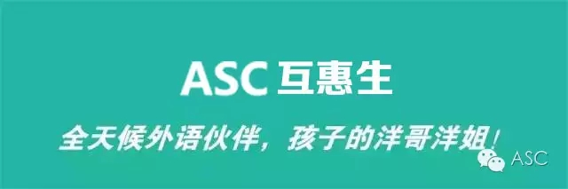
感谢您对我们的关注